41. Poisson approximation of
the distribution of the number of repeats in biological sequences
modelled by Markov chains
Touyar Narjiss 1 Dominique Cellier 2 Sophie Schbath 3 Helene Dauchel
Abstract: The aim of this work is to approximate the
distribution of the number of repeats in biological sequences
modelled by Markov chains. Because of the inaccessibility of this
distribution, we approximate it thanks to the Chen-Stein method
using the Poisson distribution.
The goal of the application is to find the statistical
significance of the repeats in the genome of a biological
species.
Keywords: repeated sequences, Chen-Stein method, Poisson
approximation.
Genomes are dynamic and redundant structures: over
a person's lifetime or over generations, genomes are regularly
subject to mutations, deletion, duplications and inversions. The
phenomenon of sequence repeats can concern the genes, or the
extragenic portions of the genome. It is therefore necessary to
study the repeats in order to understand better genome structures
and how they evolve. All the algorithmic methods dedicated to the
detection of repeats must be accompanied by a suitable mathematical
analysis providing a statistical interpretation of the detected
repeats (count, length and distribution). This analysis must make
it possible to distinguish the significant repeats from those
simply imputed randomly and so direct the biological analyses.
The statistical study presented here is based on the modelling of
the sequences by a succession of random variables in a Markov chain
which belong to a finite alphabet.
We model the sequence
 of length
of length  by
a stationary Markov chain of order one on the alphabet
by
a stationary Markov chain of order one on the alphabet
 with a transition
matrix
with a transition
matrix
 .
.
We define

Definitions
The sequence has a repeat of length 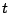 at positions
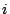 and  if and only if the
word of letters starting at is identical to the one starting at , that is
if and only if the
word of letters starting at is identical to the one starting at , that is

We will say that a repeat starts at 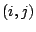 if there
is a repeat at but not at
 That is
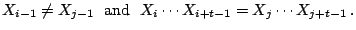
That is
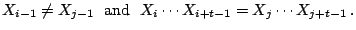
We will be only interested here in the case of
non-self-overlapping repeats, that means those relating to two
disjoined occurrences in the sequence 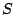.
By denoting 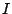 the index set of the possible
positions 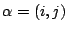, we have
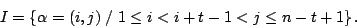
We will neglect the edge effect, e.g. when
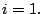
For
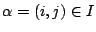, we consider the random
indicator function that a repeat starts at 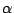
Finally, we define the random variable
 counting the number of repeats of
length by
counting the number of repeats of
length by
 and let
and let
 be its expectation :
be its expectation :
 .
.
The study of the statistical significance of the repeats relies on
the possibility of evaluating the distribution of the random
variable in the Markov chain model
 . Unfortunately, this probability
distribution is not available and approximation techniques are
then used.
Proposition If
. Unfortunately, this probability
distribution is not available and approximation techniques are
then used.
Proposition If
 and if
and if
 then the
distribution of can be approximated by a
Poisson distribution with mean .
Consequently the
then the
distribution of can be approximated by a
Poisson distribution with mean .
Consequently the  -value associated to the
existence of at least one repeat of lenght is given by :
-value associated to the
existence of at least one repeat of lenght is given by :

This proposition is obtained by getting a bound of the total
variation distance between the distribution of
and the Poisson distribution with mean .(the
Chen-Stein method)
The calculation of this bound relies on both judicious choice of
the neighborhoods system  and calculation of
upper bounds of
and calculation of
upper bounds of  ,
,  and
and  that tend to zero on
the condition that:
that tend to zero on
the condition that:
 .
.
Choice of the neighborhood : We define by the following relation

Calculation of the bounds on the error : Concerning
, we show that :

On the condition that
, the bound
 when :
when :
 .
.
For the calculation of , for instance, we need to
distinguish several cases depending on the overlaps between the
repeats starting at and

The calculation of is based on the Markov
property.
Limiting Poisson distribution : The parameter
 is not
easily computable. We have however the following upper bound
is not
easily computable. We have however the following upper bound

Consequently
 The results obtained are now used for the
statistical study of the repeats detected over an entire genome, in
order to establish the common or distinctive characteristics
between the chromosomes of the same organism (intra-genomic
comparison) or between the chromosomes of two different organisms
(inter-genomic comparison). This statistical study will be
implemented and associated to the programs ForRepeat and EvoRep
developed within the ABISS laboratory.
The results obtained are now used for the
statistical study of the repeats detected over an entire genome, in
order to establish the common or distinctive characteristics
between the chromosomes of the same organism (intra-genomic
comparison) or between the chromosomes of two different organisms
(inter-genomic comparison). This statistical study will be
implemented and associated to the programs ForRepeat and EvoRep
developed within the ABISS laboratory.
- 1
- Arratia, R., Goldstein, L. and Gordon, L. 1998. Two moments
suffice for Poisson approximation: the Chen-Stein method,
Ann.Prob.17, pp. 9-25.
- 2
- Arratia, R., Martin, D., Reinert, G. and Waterman, M. 1996.
Poisson process approximation for sequence repeat and sequencing by
hybridization, J.Comp.biol. 3(3), pp. 425-463.
Footnotes
- ... Narjiss1
- Atelier Biologie Informatique Statistiques et Sociolinguistique
(ABISS), UMR CNRS 6037, 76821 Mont Saint Aignan Cedex France.
E-mail:
{Narjiss.Touyar,Helene.Dauchel}@univ-rouen.fr
- ... Cellier2
- Laboratoire de Mathématiques Raphaël Salem (LMRS),
UMR CNRS 6085, Université de Rouen, France. E-mail:
Dominique.Cellier@univ-rouen.fr
- ... Schbath3
- INRA, Unité Mathématique Informatique et
Génome (MIG), 78352 Jouy-en-Josas,
France. E-mail:
Sophie.Schbath@jouy.inra.fr
2003-04-07